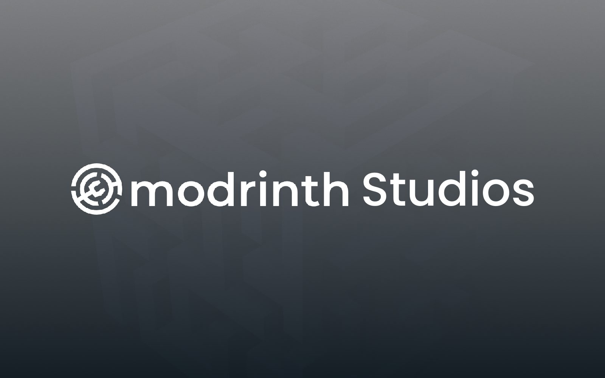
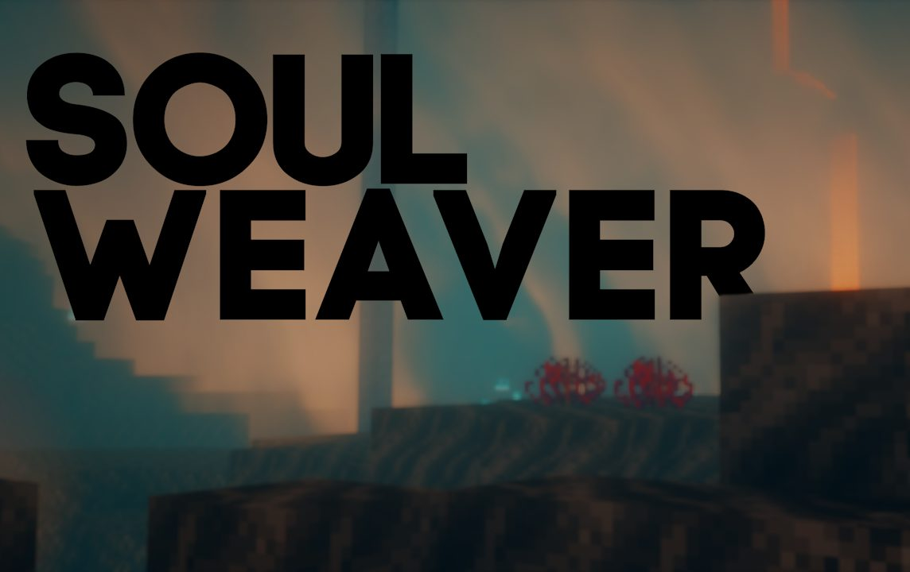
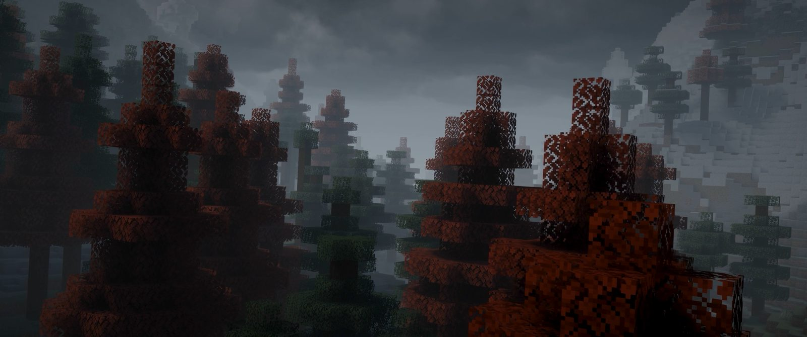
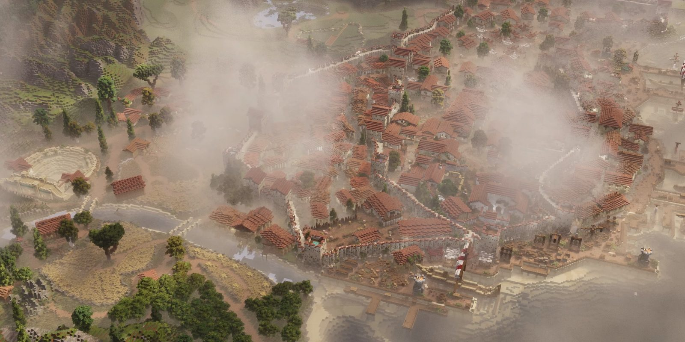
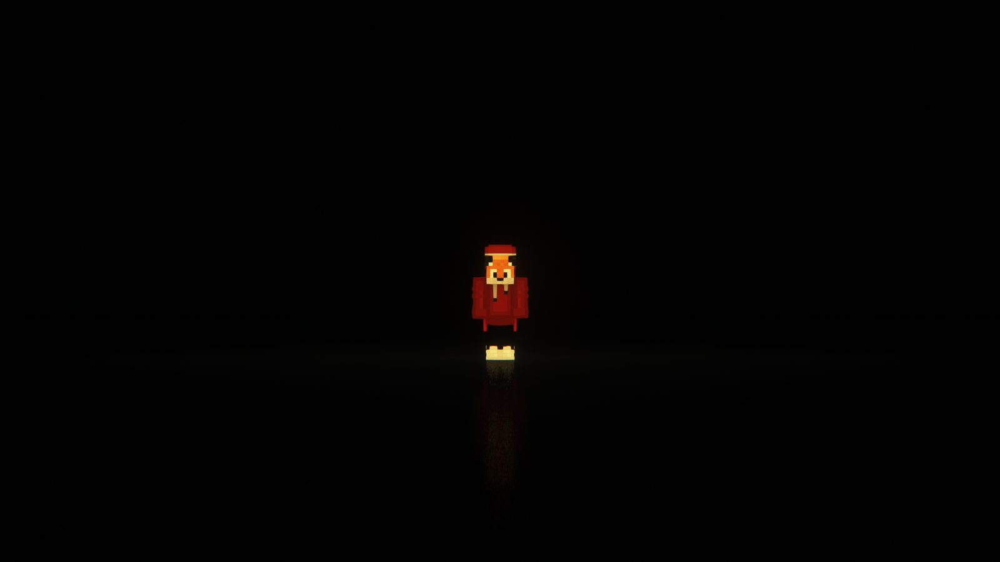

Hello, I am
Hello, I am
About
Hey! I’m an 17-year-old software developer with a strong interest in building creative and practical projects. While I’m still growing my experience in software development, I’ve already worked on projects ranging from this website and small Python applications to various other personal projects.
What I enjoy most about programming is definitely the creative side of it, taking an idea and turning it into something that actually works. That’s a big part of why I’m looking to keep developing my skills and take on more projects.
Alongside programming, I’m also passionate about cinematography. In particular, I enjoy creating cinematics which is basically just a short sequences of clips recorded inside video games and presented with a cinematic approach to tell a story or create an atmosphere.
Works

A fork of the Modrinth launcher that I made because I wanted a bit more customization. I removed the ads, added a bunch of customization options, and changed a few things to better fit the way I use the launcher.

A small fork of Helixnotes that I made after really liking the original editor. I wanted to be able to work on the same notebook with a friend in real time, so I added live collaboration.

The website you’re looking at right now. I built it from scratch using plain HTML, CSS and a bit of JavaScript. The goal was to keep it simple while still making it feel like my own.

A collection of development work I’ve done for a Minecraft SMP I work on. This includes Skript, Datapacks and Resourcepacks, ranging from a creative planning world and custom items to crafting recipes and various smaller quality-of-life features.

A small Python project I made to make building from Litematica schematics a little easier. It turns a material list into an interactive shopping list where you can simply check off each material as you get it.

A small Python project I made as a simple way to download YouTube videos or audio. It uses yt-dlp and has a simple Tkinter interface with live progress and a folder picker.
A project I made for school. Premiere Pro did most of the heavy lifting, mainly because of the amount of filmmaking techniques I used. It’s also the longest cinematic I’ve made so far.
A Blender animation for an advertisement we had to make at school. I did a lot of the editing in Premiere Pro, but I also had to use Blender for the first time, which was a completely new experience for me.

A little cinematic I made for a friend to showcase a song he made for his Minecraft mod, which adds a bunch of music to the game.

One of the first cinematics I made. I started working on it pretty much out of nowhere, and I honestly don’t remember much about how it came together. I still really like it, though.

A fairly large project I made with a friend to showcase a roleplay server. I mainly worked on the sound design, but I also co-directed the entire project.

This started as a test to see if a “void” effect was possible, but it turned out really well. I still think it’s one of the best cinematics I’ve made.